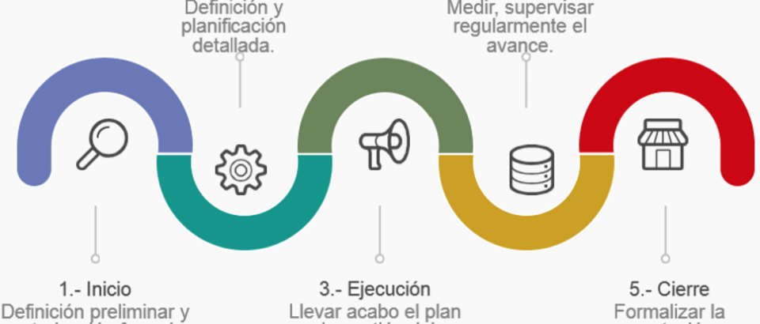

Corrientemente, los productos de una fase se revisan para verificar si están completos, si son exactos y se aprueban antes de iniciar el trabajo de la siguiente fase. No obstante, no es inusual que una fase entable su comienzo antes de la aquiescencia de los productos entregables de la fase previa, cuando los peligros implicados se consideran admisibles.
El ciclo de vida del proyecto conceptualiza los períodos que enlazan el comienzo de un proyecto con su clausura. Un ciclo de vida para un proyecto figura de fases secuenciales preparadas por tareas panificables. La evolución de una fase a otra dentro del ciclo de vida de un proyecto ordinariamente involucra y, por lo general, está determinada por alguna forma de transferencia técnica. Corrientemente, los productos de una fase se revisan para verificar si están completos, si son exactos y se aprueban antes de iniciar el trabajo de la siguiente fase. No obstante, no es inusual que una fase entable su comienzo antes de la aquiescencia de los productos entregables de la fase previa, cuando los peligros implicados se consideran admisibles. Reyes, V (2015).
Fase Inicial Fase conceptual: Es la etapa donde nace la idea, se formula el proyecto al analizar los puntos clave, se toma la decisión favorable de iniciar actividades del proyecto, se establecen las metas, se hacen los principales nombramientos y asignaciones de recursos. Consumo de Recursos: 5% Producto: Acta de inicio, enunciado del alcance Fases Intermedias Fase organizacional: Contempla el período de planificar e idear la mejor forma de hacer realidad lo planteado en la fase conceptual. Se diseña la organización y constituye el equipo de proyecto, se buscan los recursos y se hace el plan maestro y detallado de actividades.